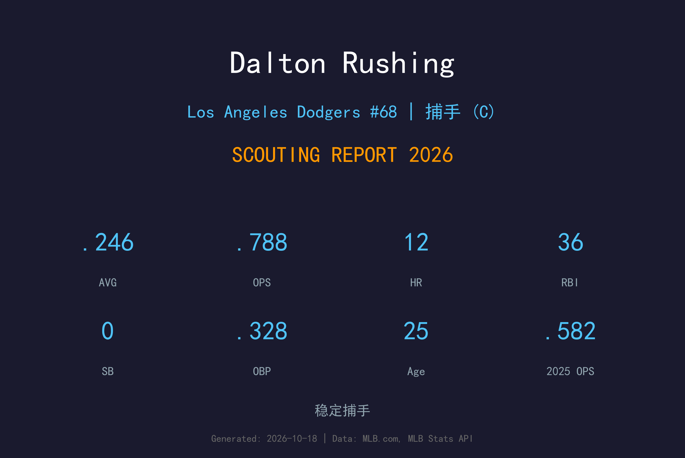
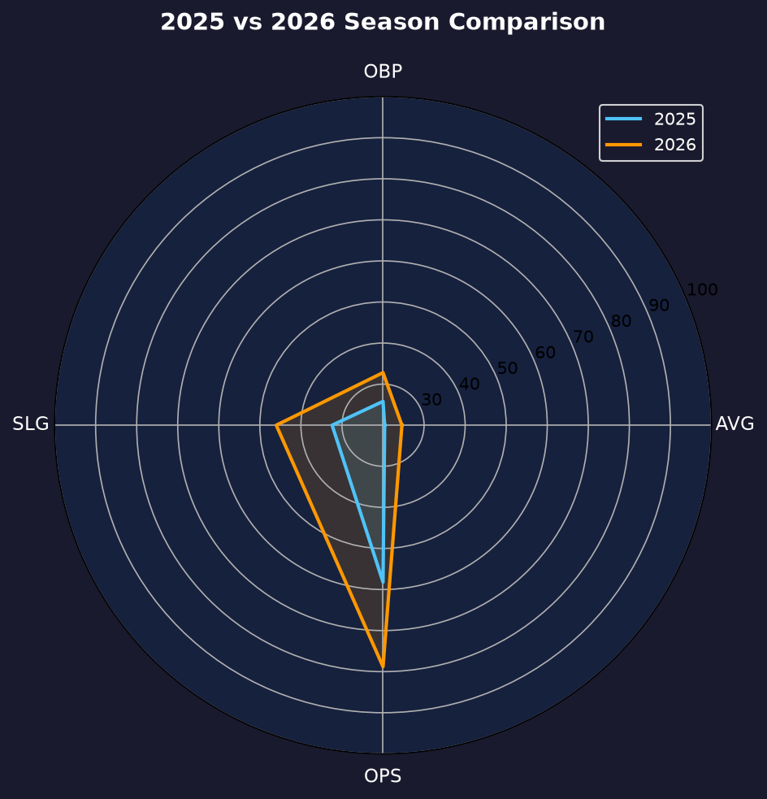
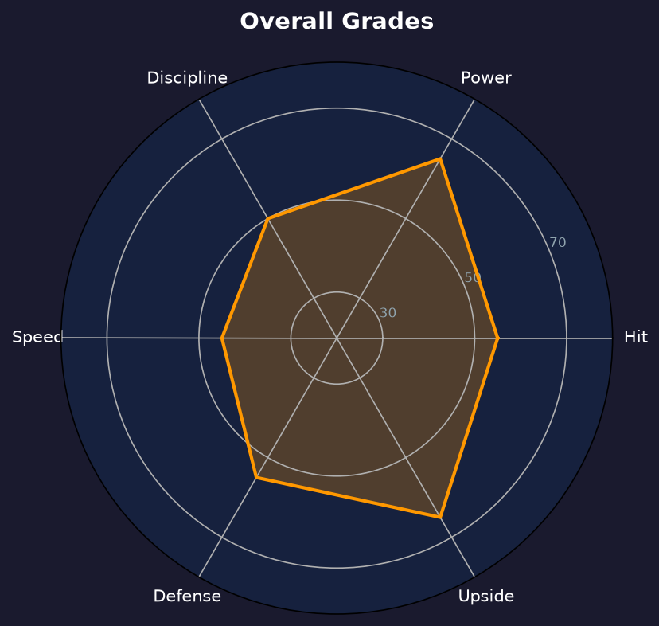

Los Angeles Dodgers #37 | 捕手 | 左打 / 右投 | 顶级新秀捕手

Dalton Rushing 是道奇农场出品的顶级新秀捕手，2026年迎来二年级大爆发：12 轰、.788 OPS，长打率从 .324 暴增至 .460。他正沿着"下一个 Will Smith"的轨迹稳步前进。
80 场出赛缴出 .246/.328/.460 的成绩单，12 支全垒打仅花 18.67 打数/支，这是主力级捕手的火力输出。5 次触身球与 23 次保送显示他的上垒本能也在进步，唯 74 次三振（29.2% 三振率）是需要继续打磨的部分。
25岁的 Rushing 是道奇未来五年捕手位置的答案。2027年他的目标是出赛 100+ 场，向 .800 OPS 与 20 轰迈进——道奇捕手接棒的剧本已经写好，剩下的只是时间。
Louisville 大学主力捕手，选秀前被普遍认为是大学最佳打者之一。
53 场初体验，.582 OPS 虽显生涩但展现了接棒主力捕手的潜质。
12 轰、.788 OPS、SLG .460，全垒打数翻三倍，成为道奇打线最惊喜的成长故事之一。

| 赛季 | G | AVG | OBP | SLG | OPS | HR | RBI | 2B |
|---|---|---|---|---|---|---|---|---|
| 2025 | 53 | .204 | .258 | .324 | .582 | 4 | 24 | 5 |
| 2026 | 80 | .246 | .328 | .460 | .788 | 12 | 36 | 12 |
OPS 从 .582 暴增至 .788（+206 点），SLG 提升 136 点——这是"新秀墙后爆发"的教科书曲线。
捕手的平均全垒打率通常在 25-30 打数/轰，Rushing 的 18.67 已经是联盟顶级水平。12 轰中有多少来自 "catcher's fatigue" 无法考证，但 .460 SLG 说明他的长打是全面的：12 支二垒打 + 12 轰，extra-base 占比极高。
29.2% 的三振率（74K/253PA）偏高，这是力量型年轻打者的常见课题。好消息是他的保送率同步提升至 9.1%，BB/SO 比从 0.17 改善至 0.31——只要他保持这个趋势，三振就不会成为致命伤。
Rushing 的2026年是"接班剧本"的第一章。当 Will Smith 需要轮休或 DH 时，他用表现让教练组放心地把棒子交给他。80 场的出赛数已接近主力捕手的工作量，而他也用 .788 OPS 证明了自己不是普通的 backup。

道奇捕手接棒人，二年级爆发只是开始
A- 级 / 高潜力主力捕手
Dalton Rushing 的2027赛季目标是坐稳"1B 捕手"位置，向 20 轰与 .800 OPS 迈进。Will Smith 的合约与年龄结构决定了两人的交接只是时间问题，Rushing 需要做的就是持续进步，让教练组的决定变得轻松。
2026：80 场 12 轰 .788 OPS，接班剧本第一章
2027：目标 100+ 场、20 轰、OPS ≥ .800
2028+：有望接任道奇主力捕手，成为打线核心之一
Dalton Rushing 出生于田纳西州 Franklin，在 Louisville 大学成长为大学棒球界最佳捕手之一。2022 年 MLB 选秀第 2 轮被洛杉矶道奇选中——这个顺位对大学捕手来说相当靠前，足见球团对他打击潜力的期待。
农场生涯一帆风顺，2025 年他完成大联盟首秀。53 场的初体验并不完美（.582 OPS），但道奇看到了他长打能力的雏形。2026 年他用 12 轰、.788 OPS 的回击证明：新秀墙只是暂时的，天赋才是永恒的。
场外的 Rushing 以沉稳与学习能力强著称，经常向 Will Smith 请教配球与比赛管理。在道奇的 succession plan 里，他是那个被寄予厚望的"下一个"——而他正用自己的方式，把这个未来变成现在。